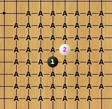
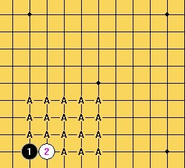

设想的一个规则，请各位高手提点意见！
#1 设想的一个规则，请各位高手提点意见！ 作者：没定式随便下 发表时间：2011-10-25 15:21:10
这个规则是由我平时自己玩的规则中演变出来的，觉得有点意思，没有要改变现行职业比赛规则的意思，只是发出来大家交流下，有希望玩的也可以一起玩玩。
开放式规则介绍：
1. A下第一手和第二手。这两子必须在四角星位范围以内，且白2须紧贴黑1（直指或斜指）。
2. B下第三手，必须在四角星位范围以内，且应与黑1，白2任一子距离3格或3格以内。
3. A下第四手，无任何限制。
4. B有权作出两种选择：
4-1. 自己下第5手，无任何限制。
4-2. 交给A下第5手，同样无任何限制。
5. 无论是A还是B下第5手，他的对手均有权选择执黑或执白。
6. 以下按标准禁手规则行棋。
以上规则相应解释：
1：


2：


大概说一下，这个规则包括了目前的rif，山口，也包括了边角，其实第4第5手是有相应限制的，因为双方都需要保证在第5手后平衡。
总之我验证了很久没有发现大的错漏，还希望有高人指点下！
［此帖子已被 没定式随便下 在 2011-10-25 15:23:01 编辑过］
［ 小丸.net 于 2011-10-25 21:00:54 时奖励此帖[金币加 100 威望加1］
#2 Re:设想的一个规则，请各位高手提点意见！ 作者：一侠客一 发表时间：2011-10-25 15:30:22
缺陷嘛 就在于这个规则太复杂 规定的太多 不利于普及五子棋［ 没定式随便下 于 2011-10-25 22:54:35 时花20金币送鲜花一朵］
#3 Re:设想的一个规则，请各位高手提点意见！ 作者：白河愁 发表时间：2011-10-25 16:09:56
普及五子棋根本不在于这一点上，象棋规则复杂不复杂，不是一样那么多人下？
从以下三方面考虑这个规则的平衡性：
1. 研究优势
黑5前的局面不能由一方完全掌控。
即使是一个非常规的4，也能找到多个5来保持大致的平衡，如果A找不到平衡的5，大可以让B自己下5，然后考虑是否交换。
可以认为研究优势较小。
2. 时间
白4需要大量思考时间，相应的，如何针对白4来下出一个平衡的黑5也需要大量思考时间。
可以认为假先方假后方均没有时间优势。
3. 出错概率
1~3手不存在出错的可能。
白4几乎不存在出错的可能，即便是非常规的4也可以稳定下来。
黑5可以自行落子，也可以交由对手落子，可以认为双方出错概率均等。
综上，这个规则大致可以认为是平衡的。
［ 陶涛业余 于 2011-10-25 16:26:50 时花20金币送鲜花一朵］
［ 逆刃 于 2011-10-25 16:47:49 时花20金币送鲜花一朵］
［ 没定式随便下 于 2011-10-25 22:52:59 时花20金币送鲜花一朵］
［ 皮皮虾 于 2012-4-24 9:56:34 时花20金币送鲜花一朵］
#4 Re:设想的一个规则，请各位高手提点意见！ 作者：掌棋宣传员 发表时间：2011-10-25 17:58:24
粗略的读了2遍,仔细思考了5分钟,没有发现明显的漏洞和缺陷......
恭喜楼主,您已经击败了中国百分之95的五子棋新规则,继续加油!!!
［ 没定式随便下 于 2011-10-25 21:55:51 时花20金币送鲜花一朵］
#5 Re:设想的一个规则，请各位高手提点意见！ 作者：与郎共五 发表时间：2011-10-25 19:29:29
没人感觉B优吗？［ 没定式随便下 于 2011-10-25 22:54:27 时花20金币送鲜花一朵］
#6 Re:设想的一个规则，请各位高手提点意见！ 作者：没定式随便下 发表时间：2011-10-25 21:50:16
感谢楼上各位LS的指点！尤其是杨LS的认可。
对了，楼上的朋友说B相对优，能不能举个例子说一下？
是认为B可以选择自己下5，也可以让对家继续下5吗？
A下1,2子，是确定了开局的位置，同时确定了1,2手为直指或斜指
B下3手可以说是确定了开局（按目前的理论，3手棋可以称为开局），实际是确定了前面三手的位置。双方共同确定了位置，但是都有相关限制，需要在星位以内，以保证继续行棋的可能性，同时也保证五子棋的本源。太分离了就不太像五子棋了。而且也不会平衡。
A继续下第4手，肯定是需要预先计算到了至少一个可以平衡的5，以保证自己下完后对家让继续能够下第5手棋，所以经过4手之前的思考，应该没有太大问题，这里要说明的一点是，4手的选择非常多，无论是哪个开局，而且对于很多个4，都有不少的5能做到平衡，少数的4可能只有一个5.
那么B落在第4手棋之后，A肯定需要思考，因为A不会预料到B会下这个4，就如同A不知道B会下哪个3一样。A会想，如果让对方继续下，会不会中套？B既然下了这个4，肯定是有把握的，而且A无法确定B接下来会下哪个5，因为有可能有几个5是可以下的。那此时如果自己能确定一个5是平衡，而且自己有比较熟悉和喜欢的，那么很可能自己下第5手。所以A在B下完4手时会思考。即使A不思考放任B继续下5，由于此时的4,5都是B下出的，A会非常陌生在，A还是需要计算平衡性，是选黑，还是选白。
但是不管B选择谁下第5手棋，至少在双方看来此时的局面大概计算认为是平衡的。至于是否真正平衡，可能A，B都不知道，但是不管是谁下出的不平衡，谁都会为此付出代价，输了也应该。
再分析一下AB双方对于开局的优势：
A的优势：为了避免由一方确定3手棋，选择了A同时下1,2手棋。A甚至可以选择自己熟悉的位置，对所有可能下的3手都做分析。但是即使是做出了相应的准备，B也不是那么容易就下个错误的4，因为刚刚说了，可以选择的4很多，即使稍有错误，也可以有5来补救。除非A对所有3,所有4，所有5都有研究，这几乎不太可能。如果是以往由A下1，3手，B下2手，那么这个开局大部分的确定权交给了A。
B的优势：相对于A可以确定位置，B在下3手时可以选择自己熟悉的开局，针对A可能下的所有4做出研究准备，但是由于A的位置关系，会造成盘端，以至于研究失效，同时A还有直指和斜指的选择。即使是A下出的是在准备范围内，那么B会自己下5吗？如果是自己下，你能吃准对方是选白还是选黑呢？会让对方继续下5吗？对方下的5可能有很多选择，会在你的预料之中吗？所以也需要对所有3，所有4，所有5做研究并准备，这几乎很难实现。
综上所述，前5手开局双方都有自己的优势和选择空间，相互限制，相辅相成，而另一个最佳的限制条件是，无论是谁下的第5手完成开局的布置，对方都有权选择黑白，因此也保证了平衡性。这里的平衡指的是在计算后认为双方都可以继续行棋，因为双方都参与了布局，也参与了思考。A不思考不敢下这个4，B不思考不敢继续下5。
另外，个人认为，3手棋的平衡性不如5手棋，这个理论应该是可以成立的，目前3手棋开局平衡的除了疏星和个别妖刀，几乎不是白优就是黑优，甚至必胜，5手之后确定平衡是比较好的选择。这个规则是在第5手后才确定开局，所有前面5手棋才构成了开局的整体，可以认为这5手棋构成的棋型为开局，这里的开局数量应该是N种，平衡的数量N种，粗略估计N在5位数以上。而同时有一个理论是，即使是优的开局在靠近边角时优势也会变削弱，因此可以认天元的平衡性是最弱的，因为双方进攻效率都会增强。所以虽然在角落时，前3手的变化不如中心，但是越靠近角落，可以选的4,5应该会更多。
欢迎补充。。
［ 掌棋宣传员 于 2011-10-25 21:55:33 时花20金币送鲜花一朵］
［ 掌棋宣传员 于 2011-10-25 21:55:35 时花20金币送鲜花一朵］
［ 掌棋宣传员 于 2011-10-25 21:55:37 时花20金币送鲜花一朵］
［ 失落刀 于 2011-10-25 22:05:37 时花20金币送鲜花一朵］
#7 Re:设想的一个规则，请各位高手提点意见！ 作者：没定式随便下 发表时间：2011-10-25 22:10:35
很多人认为这个规则太复杂，限制过多，其实不然。
比如A，1,2手都可以随便下的。只需要在星位区域内就行。
第3手也是，星位区域以内就行，至于为什么要在以1,2为基准的3线内，是因为太远了不容易平衡，也脱离了五子棋本来的面目，而且也没有必要，已经解放天元，前三手的变化非常多了。
4,5手其实没有任何限制。
限制并不算多吧。
#8 Re:设想的一个规则，请各位高手提点意见！ 作者：没定式随便下 发表时间：2011-10-25 22:19:10
1,2,3的限制是为了避免太靠近角落以导致成为废子，这对于竞技规则来讲是不利的规定。所以才限制的。而且星位以内三手棋的变化已经非常多了。
为什么1，2，3不能由一方下，因为如果一方确定的话那么这一方的选择权太大了，很有可能导致研究优势，下成自己熟悉的局面。
如果1,3手一方下呢？其实也差不了多少，只是2手的变化多了2倍，直指和斜指（按天元的点算），偏离天元的话有盘端，再乘2。其实也不多，还是一样。所以选择一方下1,2，另一方下3。
［此帖子已被 没定式随便下 在 2011-10-25 22:21:20 编辑过］
#9 Re:设想的一个规则，请各位高手提点意见！ 作者：掌棋宣传员 发表时间：2011-10-25 22:21:22
起个名字吧~~总不能叫没定式随便下规则吧......楼主该亮亮真实姓名了~~
#10 Re:设想的一个规则，请各位高手提点意见！ 作者：没定式随便下 发表时间：2011-10-25 22:24:57
还没有验证好就起名字太高调了点。而且此规则真是我自己设想自己玩玩的，如果有认同的朋友就一起玩玩。并没有想要推广，那样太深远了，而且也自认力不可及也。
#11 Re:设想的一个规则，请各位高手提点意见！ 作者：掌棋宣传员 发表时间：2011-10-25 22:27:32
那就叫:没定式随便下规则好了,这个名字太强大了...#12 Re:设想的一个规则，请各位高手提点意见！ 作者：怪 发表时间：2011-10-26 12:00:52
看起来是让双方在前5手自己把局面平衡掉，不知道有没有对前面10手棋有个更具体的分析，具体到各种棋型，即要求有更多的实战样本。
而且估计这个规则的一些基本定式，需要你自己去完善了，毕竟现在各种各样的规则太多，他们估计没什么精力帮你。毕竟提规则容易验证难。
#13 Re:设想的一个规则，请各位高手提点意见！ 作者：与郎共五 发表时间：2011-10-26 15:01:44
B方优势在信息量上。他的三手型是很熟悉的，A方下完第四手后，B方马上可以判断第五手的处治。同级棋手B方胜率会高很多。（简单表述）#14 Re:设想的一个规则，请各位高手提点意见！ 作者：没定式随便下 发表时间：2011-10-26 22:01:39
感谢LS的关注并提出意见！
LS所说的B对三手型很熟悉，这点我认同，B完全可以选择自己熟悉的开局。但是，A作为选择位置的一方，每一个不同的位置都会有盘端问题，这是一点，同时A也有自己的优势，A完全可以对自己的位置每一个可能的3都做深入研究。
比如：以1手天元,2手斜指的位置，3的数量选择最多，一共有60个选择，以1手星位，2手直指的位置，3的数量选择最少，一共有18种选择。
 
A完全可以选择自己熟悉的位置，比如星位点，因为这里的3选择是最少的，然后对每个3都做研究。无论B选择哪个3，都可以轻易下出自己要下的4。
其实双方都有自己的优势，要看怎么利用，但是双方都不可能完全占主动。
［此帖子已被 没定式随便下 在 2011-10-26 22:04:36 编辑过］
#15 Re:设想的一个规则，请各位高手提点意见！ 作者：没定式随便下 发表时间：2011-10-26 22:09:23
选择中心开局，可以选择的3多，可以下的4相对边角少；选择边角开局，可以选择的4多，同时可以选择的5也多。
#16 Re:设想的一个规则，请各位高手提点意见！ 作者：茗弈宽容 发表时间：2012-4-23 18:08:06
规则需要不断创新，觉得这个规则很不错，建议楼主可以给它命个名。无定式规则？